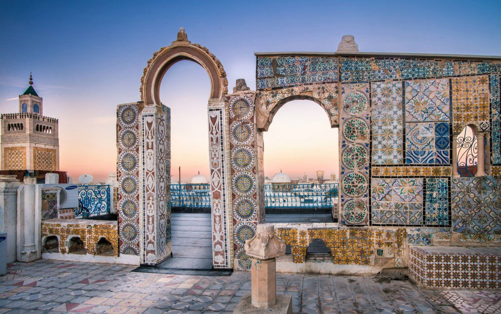

The Tunis Medina (Old Town) is a fascinating place to learn more about this north African city, which is the capital of Tunisia. The 9th century Medina was originally surrounded by walls. Today the walls are gone, but the area is filled with narrow streets, souks, mosques, and historic structures. The Tunis Medina became a UNESCO World Heritage Site in 1979 and has over 700 monuments dating back to the Almohad and the Hafsid periods of Tunisian history.
This view of the old town of Tunis from the rooftop of one of the shops in the souk shows the white monochromatic look of the Medina.
Cathedral of St. Vincent de Paul
The Cathedral of St. Vincent de Paul is a late 19th century Roman Catholic cathedral in Tunis. When Tunisia was a part of France, many residents were Catholic. After the country gained its independence in 1956, the number of Roman Catholics in Tunis decreased, and many churches were either shut down or transferred to the Tunisian government. However, this cathedral is still owned by the Catholic Church.